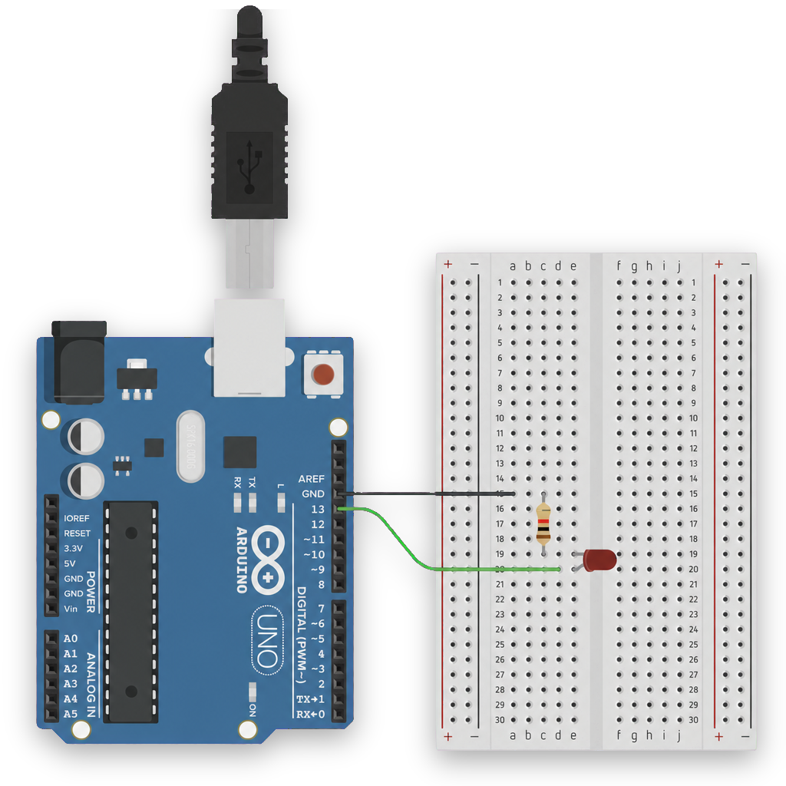
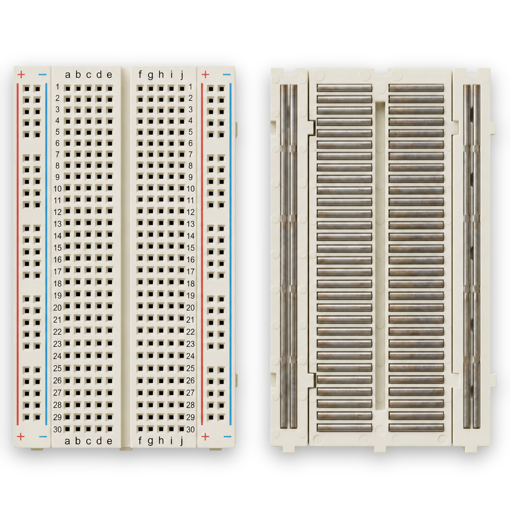
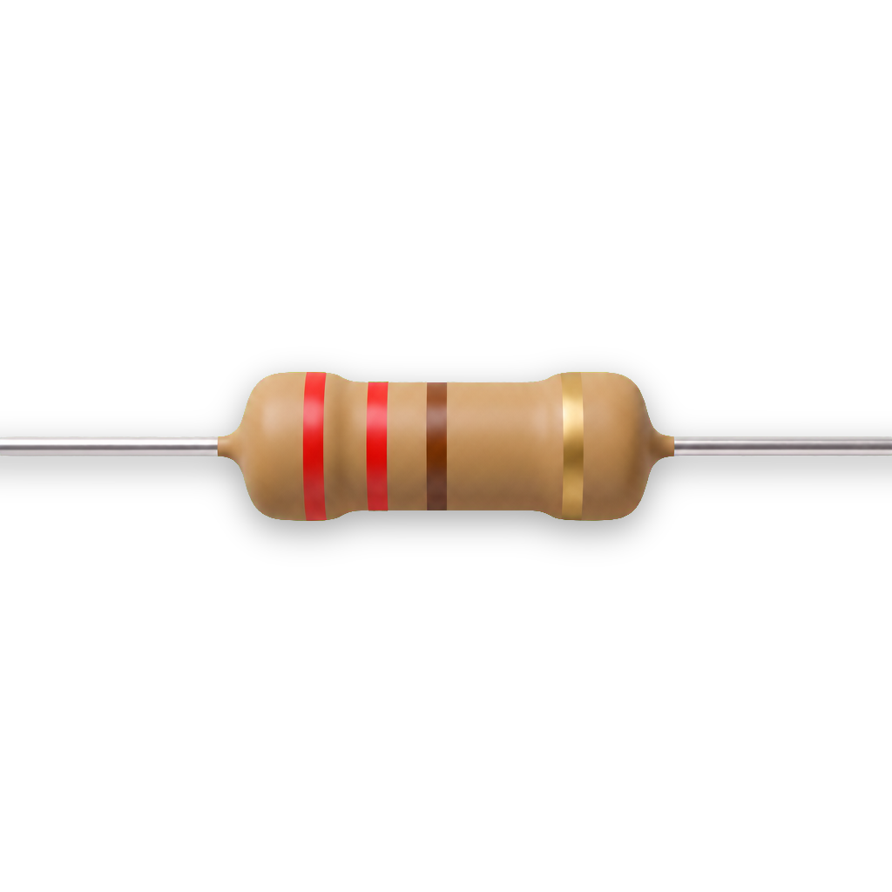
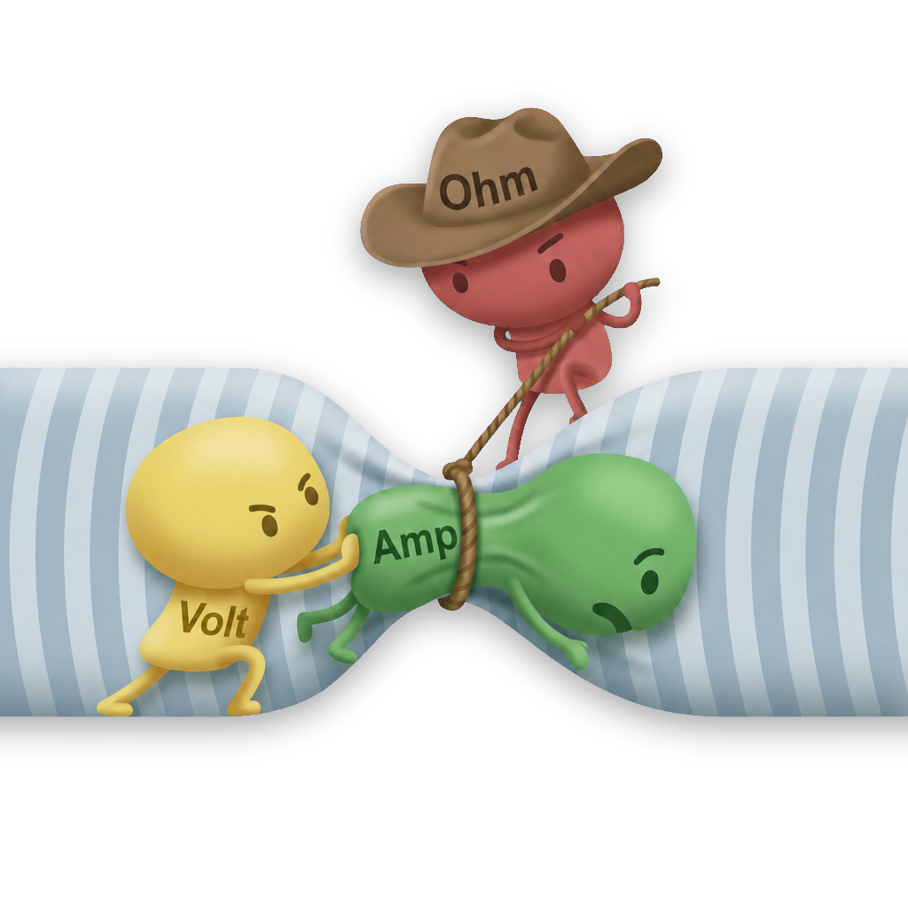
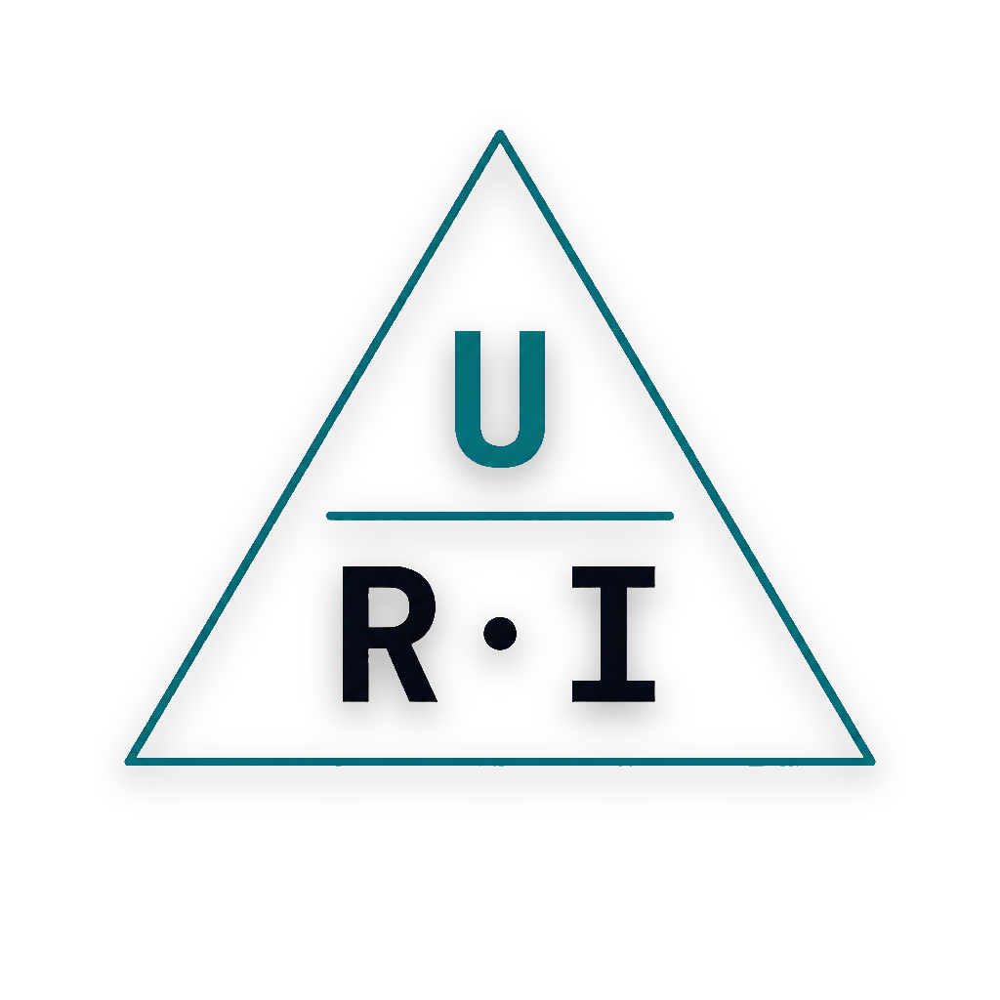

LED & krets
Från elektroner och spänning till första blinkande lampan på pin 13. Ohms lag, breadboard-anatomi, polariserade komponenter — och Blink-sketchen.
P för anteckningar.
📄
Slides PDF (träff 1)
19 sidor · för utskrift eller offline-läsning.
📘
Kompendium — Modul 1
Full text om LED, resistorer, Ohms lag och breadboard.
Vad du lärde dig
De fem konkreta sakerna du tog med dig från första träffen:
setup() körs en gång. loop() körs om och om igen. Hela Blink på tre kommandon.
Hur en LED kopplas
Från Arduinons pin 13, genom en 220 Ω-resistor, in i LED:ens anod (långt ben), ut genom katoden, tillbaka till GND. Resistorn skyddar LED:en mot att brännas av Arduinons fulla 5 V.



Ohms lag i praktiken
Varför just 220 Ω för en 5 V-LED? Lite räknande:


En vanlig 5 mm röd LED tål ca 20 mA. Den "äter" själv ca 2 V. Resistorn måste alltså sänka resten: Arduinons 5 V minus LED:ens 2 V = 3 V kvar för resistorn. Med Ohms lag: R = U/I = 3 V / 0,02 A = 150 Ω. Vi använder 220 Ω för marginal — det lyser nästan lika starkt men LED:en lever längre. Bilaga F går igenom hela beräkningen.
Blink — koden bakom
Inbyggda LED:en på pin 13 (alias LED_BUILTIN) tänds och släcks en gång per sekund.
setup() kör en gång vid uppstart; loop() körs om och om igen.
void setup() {
pinMode(LED_BUILTIN, OUTPUT); // körs en gång vid uppstart
}
void loop() {
digitalWrite(LED_BUILTIN, HIGH); // tänd
delay(1000); // vänta 1 sekund
digitalWrite(LED_BUILTIN, LOW); // släck
delay(1000); // vänta 1 sekund
}
Tre kommandon räcker för att förstå hela skissen:
pinMode(LED_BUILTIN, OUTPUT)— säg till Arduinon att pin 13 är en utgång. Görs isetup().digitalWrite(LED_BUILTIN, HIGH)— sätt pinnen till 5 V.HIGH= tänd,LOW= släckt.delay(1000)— pausa allt i 1000 ms (= 1 sekund). Arduinon gör absolut ingenting under den tiden.
När du kopplade en extern LED via pin 13 kunde du istället byta tempo:
const int ledPin = 13;
void setup() {
pinMode(ledPin, OUTPUT);
}
void loop() {
digitalWrite(ledPin, HIGH);
delay(500); // halv sekund på
digitalWrite(ledPin, LOW);
delay(500); // halv sekund av
}
const int? Pin-nummer ändras aldrig — markera det med const. Då skyddar kompilatorn dig om du råkar skriva över värdet av misstag.